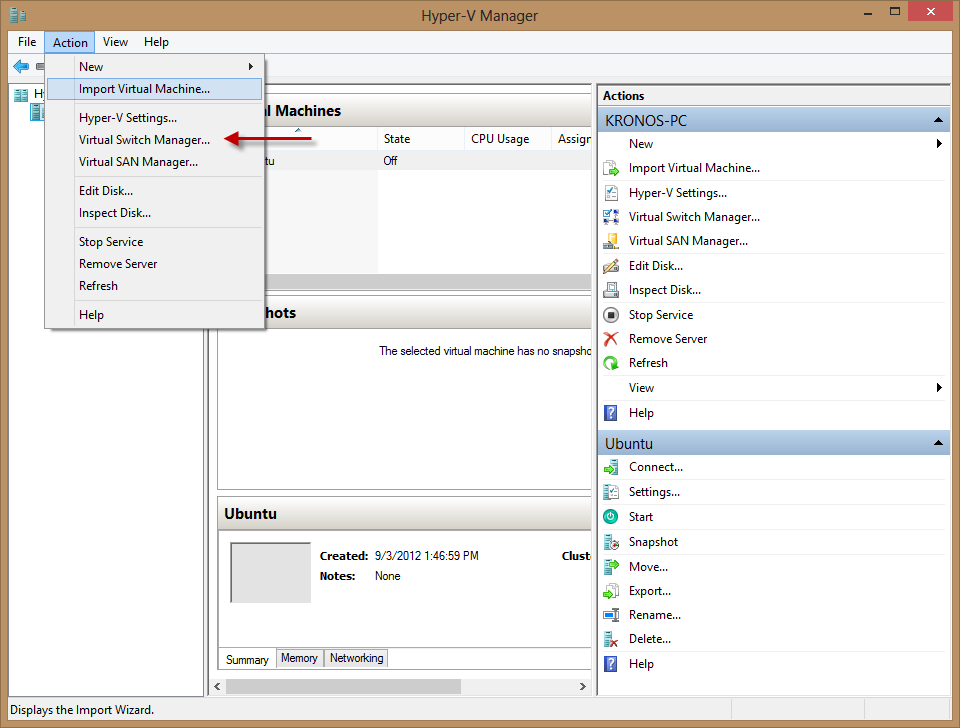
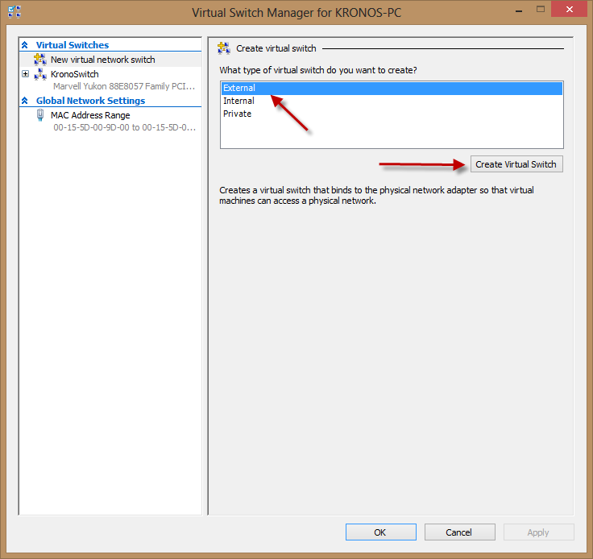
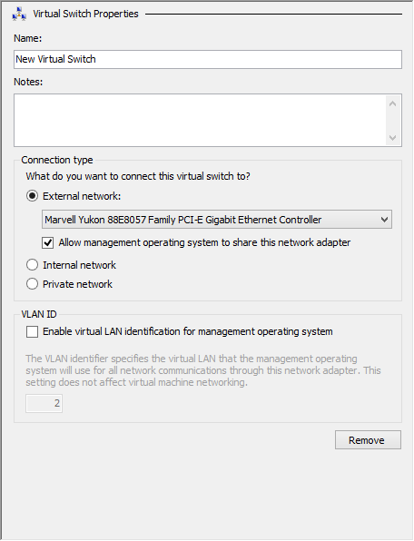
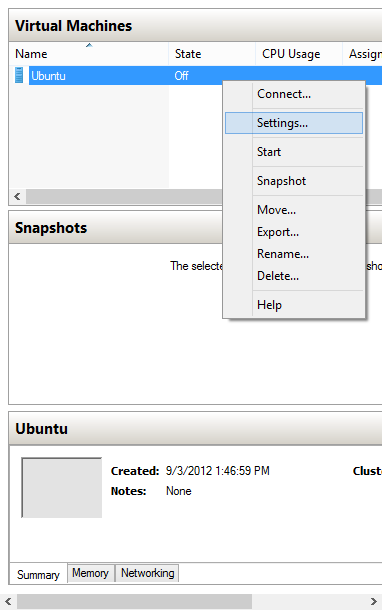
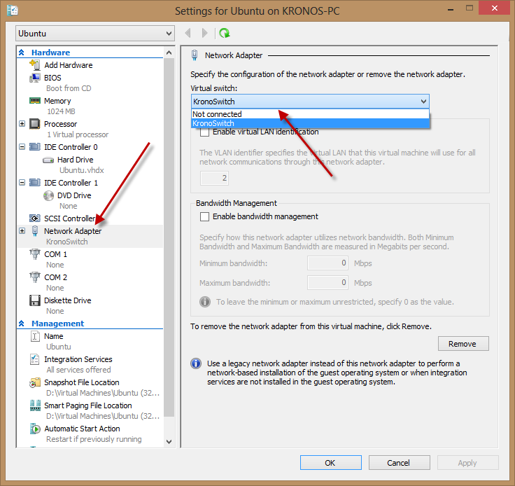

Thank you James Mertz for the very useful answer on the stackoverflow
In order to get the VM connected to the internet you have to tie it to the Ethernet/Wireless NIC Card. In order to do this you have to create a "Virtual Switch".
1. Open your Hyper-V Manager
2.Select Action --> Virtual Switch Manager

3.Select External and then Create Virtual Switch

4.Give the Switch a Name and then select the External Controller you use to connect to the
internet (Ethernet, or Wireless NIC, etc,.)
Note: You must select the way that
you are actually connecting to the internet. IE, if your computer is set up to use Wifi or
Ethernet, but is currently using Ethernet, you must use Ethernet - the Wifi connection will not
work because the host machine isn't currently using it.

5.Select Apply and then OK
6.Right click on the Virtual Machine you want to connect and select Settings

7.Under the Network Adapter Setting select the newly created Virtual Switch

This should enable the connection you use to connect to the internet to be accessible to the VM
Note: you may have to do a ipconfig /release and ipconfig /renew (Windows) or a sudo dhclient -v -r and sudo dhclient -v (Linux) on the remote machine to get it to renew its DHCP settings and retrieve an IP address.
or you can trouble shoot the network or suggested fix inside browser after go through above mentioned process (Windows)